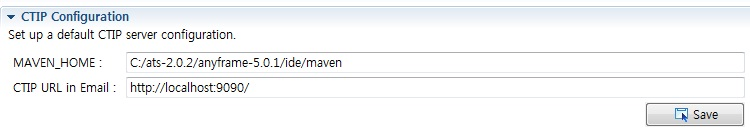

CTIP
IDE에서 Hudson을 연결하여 Hudson에 job을 등록하고 job을 실행하기 위해서 사용한다.
Hudson 서버와 통신을 하기 위해서는 anyframe-ide-eclipse-hudson-X.X.X.jar 파일을 이용해 설정을 해야 한다.
설정과 관련된 자세한 사항은 Installation을 참조한다.
- 프로젝트를 선택한 후 우 클릭 >> Anyframe Tools >> Anyframe IDE 메뉴를 선택한다.
- Anyframe IDE Editor에서 CTIP Tab을 선택하면 다음과 같은 화면이 보인다.
- Hudson URL

- URL: Hudson 서버에 접근하기 위한 url
- Configure...: Hudson 서버에 접근하기 위한 url을 등록,수정,삭제 등 관리하기 위한 팝업 화면 호출

- Hudson Configuration

- MAVEN_HOME: 프로젝트에서 Maven 빌드도구를 사용하는 경우 보여지며, Maven이 설치된 경로로 설정
- ANT_HOME: 프로젝트에서 Ant 빌드도구를 사용하는 경우 보여지며, Ant가 설치된 경로로 설정
- Hudson URL in Email: Hudson Email Notification 시 사용할 url
- All projects

- Project name: ctip job name
- Status: job 수행 상태로, job을 빌드 하는 중일 경우 building이라는 메세지가 출력됨
- New : 새로운 job 추가
- Remove : job 삭제
- Run : job 실행
- Project Details
- Build Type* : build는 빌드를 수행하고 배포파일 생성, report는 build 기능에 JUnit test, Emma, Jdepend, PMD등의 reporting 기능도 수행
| |
build |
report |
| Ant(target) |
deploy |
all |
| Maven(goal) |
package |
clean site package |
- Project Name* : Hudson job name
- Custom Workspace : workspace 경로지정
- SCM Server Type : subversion, cvs, none 세가지 type 중 선택
- SCM Server URL : SCM 서버 url
- Poll SCM schedule : job 실행 스케쥴 정의
- Build other project : 해당 job 수행 후 실행한 job의 이름 지정
- 빌드를 수행할 job을 목록에서 선택하고 Run 버튼을 클릭하여 빌드를 수행한다.
빌드가 수행되면 Status는 "building"으로 보여진다.
빌드 Status에 대해 scheduling이 걸려있지 않기 때문에, 빌드 결과는 refresh 버튼을 클릭하여 확인한다.
빌드가 다 수행이 되면 refresh 버튼을 눌렀을때 빌드 결과에 대한 이미지가 보여진다. 성공은 파란색, 실패는 빨간색.
[참고 사항]
Job에 대해 Run 기능을 수행할 때 다음과 같은 메세지가 출력되고 Fail 한다면 환경변수 MAVEN_OPTS를 추가하고, 값을 -Xmx1024m으로 설정해준다.
Error occurred during initialization of VM
Could not reserve enough space for object heap
Could not create the Java virtual machine
...
|
|